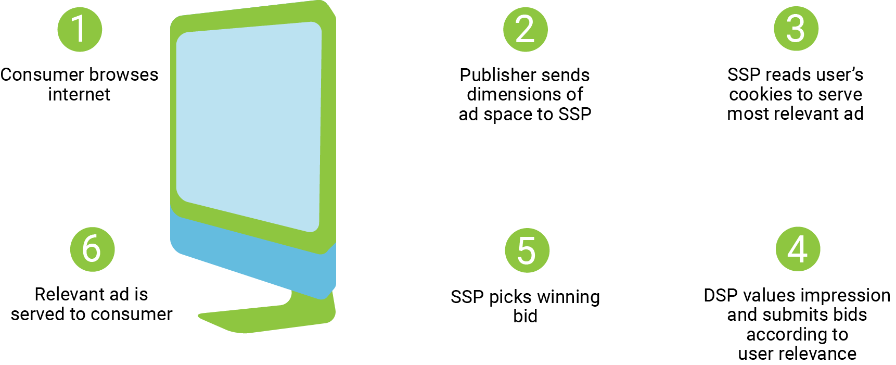

An SSP stands for Supply Side or Sell Side Platform. This is an advertising technology company that enables publishers to sell their inventory for the most money possible.
publishers: web site operators, affiliates or companies
inventory: advertising space
When you log on a website like youtube, an advertisement loads before the video which is catered specifically for you. The process behind this ad choice, which is known as programmatic advertising, is simplified with the use of SSPs.
This advertisement populating process, which takes a matter of milliseconds, involves a network of server interaction, real time bidding and HTTP requests.

This process sometimes involves more back and forth between servers but ultimately an ad specifically catered for you is chosen and most of the legwork of the publishers and the advertisers is eliminated with the use of SSPs.
For more information about SSPs and advertising technology, please visit SpotX's Advertising Technology Blog